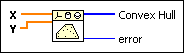

Convex Hull VI
Owning Palette: Computational Geometry VIs
Requires: Full Development System
Computes the vertices of a convex polygon, which are the set of points that make up the polygon that contains all the points.

 Add to the block diagram Add to the block diagram |
 Find on the palette Find on the palette |